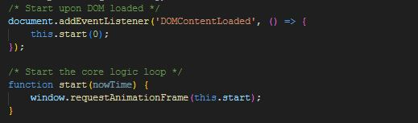
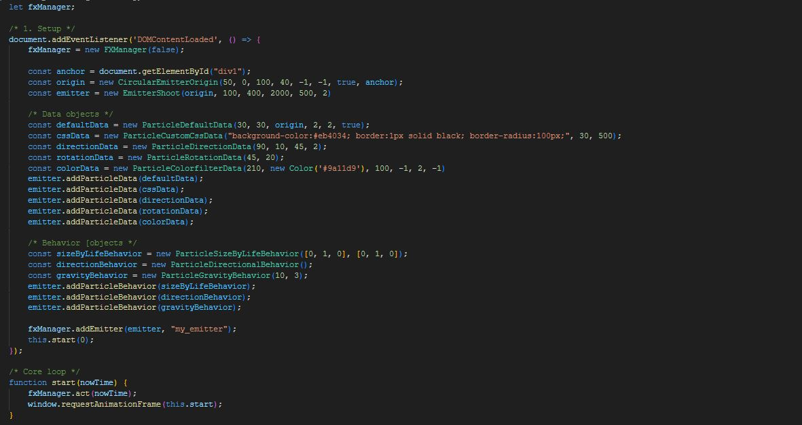
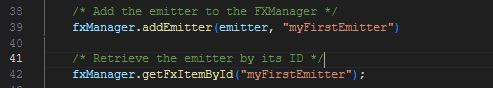

PollenFX - Particle Engine V1.0
Documentation
1. Introduction
PollenFX is a lightweight, clientside, code-first, javascript based, DOM-oriented particle engine, used to create a wide variety of visually compelling particle effects. The tool consists out of many different configuration components that allow the developer to create all sorts of visual effects by combining these components without relying on external scripts. In order to use PollenFX, one is expected to have minimal javascript knowledge, although most concepts of PollenFX should be explained sufficiently in this document.
2. A simple code snippet & general overview
In the first image we like to offer you an easy template to get started with the engine. Firstly, we create a self-executing function which serves as the entry point for the configuration of our particle setup. Another way could be by making use of a document on-load handler. Next up we create a method 'start', which is going to take the time that has past in milliseconds, which is 0 at the moment of startup. Within the start method we are going to make use of the window.requestAnimationFrame() method, which is the browser's built-in loop method, and is going to continuously be called by the browser depending on how fast your cpu functions. To this requestAnimationFrame we are going to subscribe with one of our own methods. In this case this is the start() method again. What this essentially means is that we have created an endless loop of the start() method, with the difference that each iteration of start(), we receive an updated nowTime, being the time that has passed in milliseconds. We need this value for our engine.

First, we quickly gloss over the different concepts, after which they will be explained in more depth. First an FXManager is created, which serves as an object that bundles different emitters. Next, we retrieve the element we want to attach our particle effect to. Then we create an origin object in order to define the area in which particles can spawn. An emitter is then created, with this origin injected. Data objects & behavior objects are being created in order to configure the emitter, and then applied to this emitter. The emitter is then inserted into the FXManager, we start the looping function and subscribe to this function by having our fxmanager perform the act() function. This is the general flow of how to use the engine and one will mostly add/alter more data and behavior objects. Bear in mind that in the above image not all constructor parameters are provided and there is alot more to cover. In the next segments these concepts will be explained in more depth, and the full extend of those parameters will be explained. The order in which constructor parameters will be noted is also the order in which they have to be coded.
In the next image we demonstrate how a real, yet simple particle is being created. Make sure the DOM in which you are working contains a body element.

1. FXManager and Emitters
Best explained together are the FXManager and Emitters. An emitter is considered the manner in which
particles of the same type are being excreted. It is important to note that an
emitter will always create particles of the same type and with the same configuration. An example of this
would be
the way in which smoke
particles are generated one after the other. One could consider this to be a smoke 'emitter'.
Particle effects will in many cases be more complex than a singe emitter. A good analalogy would be a
campfire. When thinking about a campfire one could imagine the sparks, the smoke and the flames.
These three concepts will obviously behave differently, thus requiring three different emitters and this is
where the FXManager comes into play. The FXManager is a tool to bundle different emitters
in order to create one coherent particle effect. In the analogy described previously an FXManager could
combine a smoke, spark and flame emitter, creating a fire particle effect. The creation and
different types of emitters will be explained further down.
2. Origins
Regardless of the type of emitter one picks, it is required to also configure an origin object. Origins can
be seen as an imaginary or invisible region of space in which particles are allowed
to spawn. Upon creation of an emitter, one is required to pass the origin object to the emitter for it to
function correctly.
3. Behavior objects
Behavior objects are being created and provided to the emitters. These behavior objects define the way an
individual particle within a certain emitter should
behave, and once applied to an emitter, this behavior will be taking effect on all of the particles created
from this emitter. As an example, lets consider snowfall.
When snow falls it is obviously affected by gravity and in order to model this, we will add a
gravitybehavior object. Secondly, the falling snow is also affected by wind,
which can be achieved by adding windbehavior also. Finally, in case we want the snow to melt whilest falling
we could add size-by-life behavior which allows to change the size
of the particle over time. It is important to note that behavior objects function independantly of eachother
and the endresult is a summation of these individual behaviors combined.
4. Data objects
Going hand in hand with the behavior objects, are the data objects. Data objects contain the data required
for a particle to be shown in a certain way. In the same way that behavior
objects must be provided to an emitter, one must do so too for data objects. When applying behavior to an
emitter it is actually this data object that is internally being altered. It
is however important to note that you can apply behavior without its respective data object, in which case a
default data object will be created for this behavior type. Applying data
objects without their respective behavior objects is also possible and will result in giving the particle an
initial, and unchanging property. Finally and most intrestingly, data
objects and their respective behavior objects can be used in combination and result in an initial configured
state for this particle, which is then being altered over time by the
behavior object. It is important to note that when talking about 'its respective behavior'-object, that each
behavior object acts on a certain data object. An example of this would be
the directionbehavior acting on the directiondata. There are also certain data objects that are not acted
upon by any behavioral
objects.
5. Initial setup
todo: code snippet show renderloop of browser
3. FXManager
As explained earlier, the FXManager is the core object of PollenFX. One will usually only need one to be active and a one time.
* allowDOMOverflow: Defines whether particles will be hidden upon overflowing the body, or whether scrolling will be enabled. If for some reason one would need two FXManager objects, the last FXManager object created will define which allowDOMOverflow value will take action. The default is set to false, meaning overflow:hidden.
4. Origins
An origin is considered an area in which particles can be defined and have to be passed on to a future emitter in order to function. There are 4 types of origin. It is important to note that when an origin is created, somewhere within the DOM, an element is going to be created which we refer to as the emitterbox. This emitterbox can be interpreted as the area in which the origin object can exists. As a default, the emitterbox will mimic the body so that the origin can exist anywhere on the webpage.
1. CircularEmitterOrigin 
Allows particles to come to life somewhere within an elliptical/circular area.
* posX: Center x coordinate of the circular/elliptical area.
* posY: Center y coordinate of the circular/elliptical area.
* width: Width of the circular/elliptical area.
* height: Height of the circular/elliptical area.
* posXNoise (optional): Adds noise/random offset to the posX parameter.
Smaller values [0,1] yield best results
* posYNoise (optional): Adds noise/random offset to the posY parameter.
Smaller values [0,1] yield best results
* overflow (optional): Boolean value defining whether the particles will be
shown when they go beyond the bounds of its emitterbox. This is usually irrelevant
for origins without anchorElement.
2. LineEmitterOrigin
Allows particles to come to life at some point or around a defined line segment.
* posX_1: The x position coordinate of first point defining the line
segment.
* posX_2: The x position coordinate of second point defining the line
segment.
* posY_1: The y position coordinate of first point defining the line
segment.
* posY_2: The y position coordinate of second point defining the line
segment.
* posXNoise (optional): Adds noise/random offset to the posX_1 & posX_2
parameters. Smaller values [0,1] yield best results. value -1 means 'unset'.
* posYNoise (optional): Adds noise/random offset to the posY_1 & posY_2
parameters. Smaller values [0,1] yield best results. value -1 means 'unset'.
* offset (optional): Allows particles to spawn some distance 'óffset' away
from the line segment, perpendicularly. value -1 means 'unset.'
3. PointEmitterOrigin 
Allows particles to come to life on a point.
* posX: The x position coordinate of the point defining where particles can
spawn.
* posY: The y position coordinate of the point defining where particles can
spawn.
* posXNoise (optional): Adds noise/random offset to the posX parameter.
Smaller values [0,1] yield best results
* posYNoise (optional): Adds noise/random offset to the posY parameter.
Smaller values [0,1] yield best results
4. RectangularEmitterOrigin
Allows particles to come to life somewhere within an rectangular area.
* posX: The x position coordinate of the top left corner of the
rectangle/square in which the particles can spawn.
* posY: The y position coordinate of the top left corner of the
rectangle/square in which the particles can spawn.
* width: Width of the rectangle/square area.
* height: Height of the rectangle/square area.
* posXNoise (optional): Adds noise/random offset to the posX
parameter. Smaller values [0,1] yield best results. A value of -1 means 'unset'.
* posYNoise (optional): Adds noise/random offset to the posY
parameter. Smaller values [0,1] yield best results. A value of -1 means 'unset'.
Additional origin parameters
Regardless of the chosen origin type, all origins share these parameter options.
* anchorElement (optional): A native HTMLElement object to which the origin
is going to be attached. If initialized, the emitterbox will mimic this anchor element.
* containerUnitWidth (optional): A positionUnit enum value representing
whether the 'width' value of this emitterbox that is optionally provided should be expressed
as a percentage of the anchorElement's width, absolutely in pixels, or as a css vw value.
* containerUnitHeight (optional): A positionUnit enum value representing
whether the 'height' value of this emitterbox that is optionally provided should be expressed
as a percentage of the anchorElement's height, absolutely in pixels, or as a css vh value.
* containerWidth (optional): The width of the emitterbox, mimicing the anchorElement,
if
provided. The width value is expressed through the containerUnitWidth field.
* containerHeight (optional): The height of the emitterbox, mimicing the
anchorElement,
if provided. The height value is expressed through the containerUnitHeight field.
* positionUnitWidth (optional): A positionUnit enum value representing whether the
'left' value of this emitterbox that is optionally provided should be expressed
as a percentage of the anchorElement's width, absolutely in pixels, or as a css vw value.
* positionUnitHeight (optional): A positionUnit enum value representing whether the
'top' value of this emitterbox that is optionally provided should be expressed
as a percentage of the anchorElement's height, absolutely in pixels, or as a css vw value.
* left (optional): Optional x-offset added to the emitterbox, mimicing the
anchorElement, if provided. The left value is expressed through the positionUnitWidth field.
* top (optional): Optional y-offset added to the emitterbox, mimicing the anchorElement, if provided. The top value is expressed through the positionUnitHeight field.
* includeMargin (optional): Whether the emitterbox is also going to get the same margin as the anchor element applied or not. procentual width,height,top and left will be calculated with margin in/excluded depending on this value. Default is false.
* includePadding (optional): Whether the emitterbox is also going to get the same padding as the anchor element applied or not. procentual width,height,top and left will be calculated with padding in/excluded depending on this value Default is true.
* includeBorder (optional): Whether the emitterbox is also going to get the same border as the anchor element applied or not. procentual width,height,top and left will be calculated with border in/excluded depending on this value Default is true.
5. Emitters
Emitters are considered the source from which particles are being 'emitted' and define the manner in which these particles are being excreted. There are two types of emitter; the burst-emitter and the shoot-emitter. In this section we will go over the different parameters one can configure.
1. EmitterShoot
The EmitterShoot object is an emitter that emits particles one by one in a linear flow. This can last
indefinitely or be halted at some point. An example would be a dripping fosset.
* emitterOrigin: The origin object that defines the area in which particles
are allowed to be created.
* particleCount: The amount of particles that the emitter will emit.
* emitterDuration: The time (in ms) over which the configured amount of
particles will be spawned. A value of -1 makes the emitter emit particles indefinitely.
* particleLifetime: Defines how long (in ms) particles will remain alive
for.
* delay (optional): Defines an optional delay (in ms) before the emitter
will
start.
* particleLifetimeNoise (optional): Adds noise to the particleLifetime of
each individual particle. Lower values [0,1] make most sense.
* spawnIntervalTime (optional): Only relevant for emitterDuration values of
-1, and define the time (in ms) between each particle spawn.
2. EmitterBurst
The EmitterBurst object is an emitter that releases all of its particle in one go. These bursts can go on
indefinitely or occur only once. An example would be a firework explosion.
* emitterOrigin: The origin object that defines the area in which particles
are allowed to be created.
* particleCount: The amount of particles that the emitter will burst.
* burstCount: The amount of burst events that will occur, each containing
as
many particles as defined in particleCount.
* emitterDuration: Defines the time (in ms) over which the emitter will
emit
its x burst-events.
* particleLifetime: Defines how long (in ms) particles will remain alive
for.
* delay (optional): Defines an optional delay (in ms) before the emitter
will
start.
* particleLifetimeNoise (optional): Adds noise to the particleLifetime of
each individual particle. Lower values [0,1] make most sense.
* burstIntervalTime (optional): Only relevant for emitterDuration values of
-1, and define the time (in ms) between each burst event.
6. Data objects
A data object defines a certain property of each particle within an emitter. A data object without respective behavior object represents its fixed state for that property. Adding a behavior object of that respective data object, means that the data object defines its initial state for that property, to then be altered over time by the behavior object.
1. ParticleDefaultData 
In order for a particle to just be shown, it requires at least two properties; position and size. This is
what the ParticleDefaultData object prescribes.
* width: Width (in pixels) of the particle.
* height: Height (in pixels) of the particle.
* emitterOrigin: The origin object that defines the area in which particles
are allowed to be created.
* noiseWidth (optional): Adds/subtracts random noise to the width property in order to apply
randomness to its width. Lower values yield less extreme results. Default is -1, meaning unset.
* noiseHeight (optional): Adds/subtracts random noise to the height property in order to apply
randomness to its height. Lower values yield less extreme results. Default is -1, meaning unset.
* uniformSizeWidth (optional): Boolean value defining whether the optionally added size noise, if provided,
should always keep the sizing uniform. If true, the noiseWidth value will be taken as a reference. Default is false, meaning non-uniform is allowed.
* horizontalPivot (optional): Pivot enum value defining where the pivot
point
lies, horizontally, in defining the origin of the particle.
* verticalPivot (optional): Pivot enum value defining where the pivot point
lies, vertically, in defining the origin of the particle.
2. ParticleCustomCSSData 
The ParticleCustomCSSData allows for custom css stylerules to be added to each particle within an
emitter.
* customCssObject: A string containing x css stylerules, applied to all
particles within the emitter. Beware that multiple stylerules within this string should be
semicolon-separated.
* minZIndex (optional): Along with the maxZIndex, a random z-index will be
assigned between those two values. Default is -1, meaning unset and results in a fixed z-index of 2001.
* maxZIndex (optional): Along with the minZIndex, a random z-index will be
assigned between those two values. Default is -1, meaning unset and results in a fixed z-index of 2001.
3. ParticleDirectionData
The ParticleDirectionData defines the direction and speed of the particles of an emitter. Because this is
a
data object, this object by itself won't do anything. It is however
altered by many Behavioral objects and serves as an initial state of direction and speed when being
altered
by these behavioral objects.
* directionAngle: Defines (in degrees) the direction particles should move
toward.
* speed: Defines the speed by which the particles move in the direction of
the provided directionAngle parameter.
* coneNoise (optional): Adds an imaginary cone (in degrees) around the
directionAngle overriding the directionAngle field by a random angle within this cone.
* speedNoise (optional): Adds noise/random offset to the speed parameter.
Smaller values [0,1] yield best results. A value of -1 means 'unset'.
4. ParticleRotationData
The ParticleRotationData object defines the rotation property of the particles spawned from an
emitter.
* rotation: Defines (in degrees) the amound of rotation a particle must
have.
* coneNoise (Optional): Adds an imaginary cone (in degrees) around the rotation angle and
randomizes the rotation value by a random angle within this cone. Default = -1 and means no randomization.
5. ParticleOpacityData 
The ParticleRotationData object defines the transparency of the particle object.
* opacity: The transparency/opacity of the particles of the emitter. Values
are meaningful between [0,1]
* opacityNoise (Optional): Adds noise/random offset to the opacity
parameter.
Smaller values [0,1] yield best results. A value of -1 means 'unset'.
6. ParticleImageData
The ParticleImageData object allows for particles to be presented as an image.
* url: The URL to the image.
* imgWidth: The physical width of the image file in px.
* imgHeight: The physical height of the image file in px.
* imageFitting (optional): The ImageFitting enum value defines how the
image
is being applied to the particle div element and should usually not be altered.
* keyOverride (optional): Should not be altered. Flipbookdata extends
Imagedata and overrides this key.
* imgLoadingCallback (optional): Should not be altered. Represents the
callback method processing the image.
7. ParticleFlipbookData
The ParticleFlipbookData object allows for spritesheets/flipbooks to be applied to the particle through
which is being flipped in order to display an animation.
* url: The URL to the image.
* imgWidth: The physical width of the image file in px.
* imgHeight: The physical height of the image file in px.
* frameCountX: The amount of images within the provided spritesheet over
the
x axis.
* frameCountY: The amount of images within the provided spritesheet over
the
y axis.
* startFrame (optional): At which frame index of the spritesheet the
animation should start.
* imageFitting (optional): The ImageFitting enum value defines how the
image
is being applied to the particle div element and should usually not be altered.
8. ParticleColorfilterData 
The ParticleColorfilterData object allows for altering or adding color to the look of the particle aswel
as
modifying hue, saturation and brightness.
* hueRotate (optional): The amount (in degrees) of hue shifting that must
occur to the particle's appearance.
* color (optional): A Color object being overlayed ontop of the particle
functioning as a colored filter.
* noise (optional): Adds noise/random offset to color/hue shift parameter,
depending on which was provided. Smaller values [0,1] yield best results. A value of -1 means 'unset'.
* contrast (optional): Increases the contrast to the appearance of the
particles. Values between [0,100] are valid.
* saturation (optional): Increases the saturation to the appearance of the
particles. Values between [0,100] are valid.
* brightness (optional): Increases the brightness to the appearance of the
particles. Values between [0,1000] are valid.
7. Behavior objects
Behavior object are objects that describe the continuous behavior of a certain type that a particle expresses. Each behavior type acts on its corresponding data object. For example, ParticleFlipbookBehavior acts on ParticleFlipbookData and ParticleDirectionalBehavior acts on ParticleDirectionData.
1. ParticleDirectionalBehavior
The particledirectionalbehavior allows for particle movement in a certain direction. It acts on the
ParticleDefaultData and has no constructor parameters as all data it requires
is already stored in the data object. It does however still need to be applied
2. ParticleSizeByLifeBehavior 
This behavioral type allows for gradual changes in size over the lifetime of the particles and acts upon
ParticleDefaultData.
* sizeMultipliersX: An array of numbers representing the scalars through
which the particle is going interpolate over its lifetime/provided duration and multiply as a scalar to its width defined in the
ParticleDefaultData.
* sizeMultipliersY: An array of numbers representing the scalars through
which the particle is going interpolate over its lifetime/provided duration and multiply as a scalar to its height defined in the
ParticleDefaultData.
* duration (optional): Time (in ms) it should take for the particle to run
through the sizeMuliplier lists once. Default = -1, meaning that it runs through those size lists once during its lifetime.
* scalarNoise (optional): Adds noise/random offset to the sizeMuliplier
lists. Smaller values yield less extreme results. Default = -1 and means no noise.
* uniformNoise (optional): Whether the scalarNoise, if provided, should
scale
both lists uniformly. Beware that this parameter can yield odd results for sizeMuliplier lists of unequal
length.
* sizeIterationCount (optional): Allows for a forced halt in running
through
the sizeMuliplier lists after having passed x numbers in those lists. It then remains the size where it
halted. Default = -1 and means that no halting should occur.
3. ParticleGravityBehavior
The ParticleGravityBehavior allows for adding gravity and acts upon ParticleDefaultData.
* fieldStrength: The force by which the particles are being pulled
downwards.
Negative values allow for inverted gravity.
* fieldStrengthNoise (optional): Adds noise/random offset to the
fieldStrength parameter. Smaller values [0,1] yield best results. A value of -1 means 'unset'.
4. ParticleRotationBehavior
Defines how the particles should be rotating or 'spinning'. This behavior object acts on
the ParticleRotationData.
* rotation: The speed by which the particle will rotate. Positive values
yield counter clockwise rotation.
* rotationNoise (optional): Adds noise/random offset to the rotation
parameter. Lower values yield less extreme results. Default = -1 and means no noise is being added.
* allowReverse (optional): Boolean value defining whether the rotationNoise
is allowed to invert the rotation direction. Default = true.
5. ParticleOpacityByLifeBehavior 
The ParticleOpacityByLifeBehavior allows for alteration in the particle's opacity over time. It acts upon
the ParticleOpacityData object.
* opacityMultipliers: An array of numbers between [0,1] representing the
scalars through which the particle is going interpolate and multiply with its opacity value defined in the
ParticleOpacityData.
* opacityNoise (optional): Adds noise/random offset to the
opacityMultipliers. Smaller values [0,1] yield best results. A value of -1 means 'unset'.
* duration (optional): Time (in ms) it should take for the particle to run
through the opacityMultipliers once. -1 means that it runs through it once during its lifetime
* opacityIterationCount (optional): Allows for a forced halt in running
through the opacityMultipliers after having passed x numbers in this list. It then remains the opacity
value
where it halted.
6. ParticleWindBehavior
The ParticleWindBehavior object allows to mimic the effects of wind. It allows just like
directionalbehavior
for movement to the particle, but the wind behavior allows for wavey movement.
It acts upon the ParticleDefaultData.
* angles: An array of angles (numbers, in degrees) representing the angles
towards the wind blows and through which the particles are going interpolate and be blown towards.
* cycleDuration (optional): Time (in ms) it should take for the particle to
run through the angles list once. -1 means that it runs through it once during its lifetime
* windSpeed (optional): The power/windspeed by which the wind will blow
towards the direction the particle is currently at in its angles list. Default value is 1.
* deepRandom (optional): Boolean value that if true, randomizes all angles
by
an angle between the biggest and smallest angle provided in the angles list.
* shallowRandom (optional): Boolean value that if true, randomizes each
angle
by a new random angle between its provided neighbouring angles.
* considerDefault (optional): Boolean value that if true, the initial
direction as defined in the ParticleDirectionData will not be discarded.
* overrideInitialDirection (optional): Boolean value that if true, the
initial direction as defined in the ParticleDirectionData is overridden by the first angle in the angle
list.
If false, the initial direction will be appended to the angles list. Note that this parameter is only
valid
when the considerDefault parameter is true.
7. ParticleColorShiftBehavior 
The ParticleColorShiftBehavior allows for a gradual change in what the ColorFilterData only initializes
once, when it comes to hue, saturation and brightness. This behavior object acts on the
ColorFilterData.
* hues: An array of hue-values between [0,360] through which the particles
are going interpolate and take on this interpolated hue value for each moment in time over its life.
* contrasts: An array of contrast-values between [0,100] through which the
particles are going interpolate and take on this interpolated contrast value for each moment in time over
its life.
* saturations: An array of saturation-values between [0,100] through which
the particles are going interpolate and take on this interpolated saturation value for each moment in time
over its life.
* brightnesses: An array of brightness-values between [0,1000 through which
the particles are going interpolate and take on this interpolated brightness value for each moment in time
over its life.
* forceForwardHue: Given that hue is expressed as an angle, this boolean
value will make sure a hue shift from 290 to 30 will not count downwards, but internally upwards from 290
to
360+30.
8. ParticleColorfilterBehavior 
The ParticleColorfilterBehavior allows for a gradual change in what the ColorFilterData only initializes
once, when it comes to color. This behavior object acts on the ColorFilterData.
* colors: An array of color-objects through which the particles are going
interpolate and take on this interpolated color overlay for each moment in time over its life.
* duration (optional): Time (in ms) it should take for the particle to run
through the colors once. -1 means that it runs through it once during its lifetime
* randomStartColor (optional): Boolean value defining whether a random
color
from the colors list is being taken to start from.
* startIndex (optional): Similar to randomStartColor, a provided startIndex
will use the provided color at that index to be the starting color.
* colorIterationCount (optional): Allows for a forced halt in running
through
the colors after having passed x colors in this list. It then remains the color value where it halted.
9. ParticleRotationByDirectionBehavior
This behavior object allows the rotation to always be set to match the direction that the particle is
going towards. The object acts on
the rotation data object and does not function in combination with the ParticleRotationBehavior.
* offset (optional): Adds an additional offset (in degrees) to the rotation
which is being matched to the
particle's direction.
8. Color, Pivot, PositionUnit, ImageFitting
There are several constants that are worth adressing. These are Color, Pivot, PositionUnit and ImageFitting. These are enums that hold constant values and are sometimes required during configuration of data objects and or behavioral objects
1. Color
Colors are fairly self explanatory. It is however important to note that when a color is requested, i must
be a PollenFX Color object. There are 2 methods of calling its constructor.
* hex string value: new Color('#45F18B')
* RGB values: new Color(125,251,66)
2. Pivot
When a Pivot enum is required, this will allow the user to configure the origin of the particle. For
example, a pivot placed in the bottom-right corner will scale the particle outwards to the upper left
corner
when scaling.
* Pivot.BEGIN: Means either top, or very left border of the particle
container.
* Pivot.CENTER: Means either vertical, or horizonta center of the particle
container.
* Pivot.END: Means either bottom, or very right end of the particle
container.
3. PositionUnit
When working with positions or dimensions, we sometimes want this to be expressed as a proportion of its
parent, the document or in absolute pixels.
* PositionUnit.PERCENTAGE: Refers to an expression as a percentage of its
parent. The css equivalent of this would be '%'.
* PositionUnit.PIXEL: Refers to an absolute value in pixels. The css
equivalent of this would be 'px'.
* PositionUnit.VIEW_WIDTH: Refers to an expression as a percentage of the
screen width. The css equivalent of this would be 'vw'.
* PositionUnit.VIEW_HEIGHT: Refers to an expression as a percentage of the
screen height. The css equivalent of this would be 'vh'.
* PositionUnit.VIEW: Both VIEW_WIDTH and VIEW_HEIGHT combined when there is
no distinction allowed between the two.
4. ImageFitting
When working with images, it can be useful to specify how the image has to be applied to the particle.
These
directly entail a css stylerule.
* ImageFitting.COVER: Represents the background-size : "cover" css
property.
* ImageFitting.FIT: Represents the background-size : "100% 100%" css
property.
* ImageFitting.CONTAIN: Represents the background-size : "contain" css
property.
9. Additional functionality
1. FXItemIDWhen adding an emitter to the FXManager, one can add an ID. Later, perhaps in order to add extra custom functionality, one can request this emitter by its ID in order to modify it.

10. An extensive code snippet
Finally, here is a more in-depth example of the creation of a particle effect.